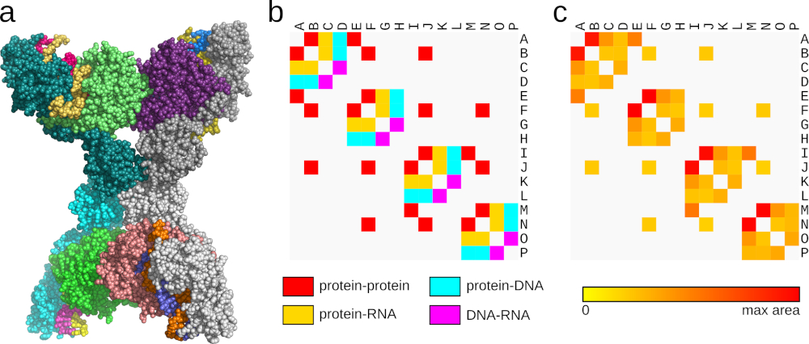

![Exploration of the structure of dihydrofolate reductase (PDB ID 7DFR) using Voronota-LT, illustrated with graphics generated by Voronota-LT and rendered in PyMOL. (a) Dihydrofolate reductase with the ligands NADP (green) and folic acid (magenta), shown as van der Waals balls; (b) The constrained Voronoi cell of the “O2” atom of folic acid, with contact areas colored in yellow, solvent-accessible surface area colored in green, and direct Voronoi neighbors colored in blue; (c) The constrained Voronoi cells of all atoms of folic acid; (d) Yellow line segments represent all virtual collisions with atoms that are close enough to the ligand atoms (colored in magenta and green) to be considered interacting by a distance-based definition, but not necessarily by the tessellation-based definition; (e) Voronoi tessellation-derived contact areas between the ligands and the protein; (f) Voronoi tessellation-derived interface between the two ligands.](main_figure_dfr.jpg)
Voronota-LT is a versatile and highly efficient tool for computing Voronoi tessellation-based atom-atom contact areas within molecular solvent-accessible surfaces. It enables robust exploration and description of interatomic interactions, with contact areas summarized at the atom-atom, residue-residue, and chain-chain levels.
Voronota-LT is freely available at https://www.voronota.com/expansion_lt/.
This tutorial provides a hands-on, illustrated introduction to using Voronota-LT via command-line scripting.
The PDF version of this tutorial is available at https://doi.org/10.5281/zenodo.22296755.
In structural biology, it is often important to identify and analyze molecular interactions. Traditionally, most approaches rely on calculating and interpreting atom-atom distances. However, the distance between a pair of atoms does not depend on the surrounding atoms. Alternatively, analysis based on Voronoi tessellation makes it possible to account for all structural neighbors that may affect a given interaction (contact).
Given a molecular structure, it can be represented as a set of atomic balls, each ball having a van der Waals radius corresponding to the atom type. A ball can be assigned a region of space containing all points closer to that ball than to any other. Such a region is called a Voronoi cell and the partitioning of space into Voronoi cells is called Voronoi tessellation or Voronoi diagram. Two adjacent Voronoi cells share a set of points that form a surface called a Voronoi face. A Voronoi face can be viewed as a geometric representation of a contact between two atoms. The Voronoi cells of atomic balls may be constrained inside the boundaries defined by the solvent accessible surface (SAS) of the same balls.
With a SAS-constrained Voronoi tessellation, every atom-atom contact can be assigned the area of the corresponding constrained Voronoi face. Unlike distances, contact areas can be summed directly. Therefore, tessellation-based atomic contacts can be efficiently summarized at the residue and chain levels. Importantly, tessellation-derived contact faces and SAS patches can be visualized in 3D alongside the input molecular structures.
This tutorial provides a practical illustrated introduction to tessellation-based analysis of macromolecules using the recently introduced Voronota-LT software.
To run the commands presented in the sections below, a Bash-like shell environment is recommended. Most macOS and Linux distributions provide such an environment by default through their terminal applications. For Windows users, the most straightforward way to obtain a Bash-like shell environment is through the Windows Subsystem for Linux (WSL).
A fast and easy way to prepare a Voronota-LT command-line executable is to download a universal executable file built with the “Cosmopolitan Libc” toolkit (https://github.com/jart/cosmopolitan). The universal executable can run on all major platforms (Linux, macOS, and Windows). Voronota-LT software is included in the larger Voronota software package. Voronota-LT version 1.1.479 is a part of Voronota release 1.29.4602, the Voronota-LT universal executable file can be downloaded from https://github.com/kliment-olechnovic/voronota/releases/download/v1.29.4602/cosmopolitan_voronota-lt_v1.1.479.exe and prepared to use as shown below:
wget "https://github.com/kliment-olechnovic/voronota/releases/download/v1.29.4602/cosmopolitan_voronota-lt_v1.1.479.exe" # download
mv cosmopolitan_voronota-lt_v1.1.479.exe voronota-lt # rename
chmod +x ./voronota-lt # set permission to execute
./voronota-lt -h # view the version number and the list of optionsLet us explore the structure of dihydrofolate reductase from the Protein Data Bank (PDB) entry 7DFR. It consists of a protein and two ligands, NADP and folic acid (Figure 1a). First, let us download the input file, run Voronota-LT on it, and inspect the output log:
wget https://files.rcsb.org/download/7DFR.cif
./voronota-lt 7DFR.ciflog_total_input_balls ...................... 1309
log_total_collisions ....................... 29947
log_total_relevant_collisions .............. 29947
log_total_contacts_count ................... 8727
log_total_contacts_area .................... 27697.2
log_total_cells_count ...................... 1309
log_total_cells_sas_area ................... 7748.59
log_total_cells_sas_inside_volume ......... 31115.8In the printed output we can see the total number of atoms (1309 — only heavy, non-hydrogen atoms are considered by default); the number of constructed interatomic contacts (8727), including both intra-residue and inter-residue interactions; the sum of all interatomic contact areas (27697.2); the total area of all per-atom solvent-accessible surface patches (7748.59); and the total volume of all per-atom Voronoi cells (31115.8). The number of collisions (29947) corresponds to all atom-atom pairs that are so close that a solvent-sized sphere cannot fit between them. The actual contacts reported by Voronota-LT are those collisions that are retained after Voronoi tessellation and assigned an area.
To connect these values with the underlying geometric objects, let us construct the constrained Voronoi cell of a single atom and report its properties:
./voronota-lt --input 7DFR.cif \
--restrict-atom-descriptors-for-output "[-rname FOL -aname O2]" \
--restrict-contacts-for-output "[-a1 [-rname FOL -aname O2]]"log_total_input_balls ...................... 1309
log_total_collisions ....................... 29947
log_total_relevant_collisions .............. 29947
log_total_contacts_count ................... 11
log_total_contacts_area .................... 38.4227
log_total_cells_count ...................... 1
log_total_cells_sas_area ................... 6.8354
log_total_cells_sas_inside_volume ......... 21.0889We still compute the full tessellation, but constrain the output to involve only a single atom selected by its atom name and residue name. While the numerical output shows that the atom has 11 contacts and is exposed to solvent, we can also generate a graphical representation of the constructed geometric objects for viewing in PyMOL or ChimeraX. The example below generates a drawing script for PyMOL, with the log output suppressed using the --quiet flag:
./voronota-lt --quiet --input 7DFR.cif \
--restrict-atom-descriptors-for-output "[-rname FOL -aname O2]" \
--restrict-contacts-for-output "[-a1 [-rname FOL -aname O2]]" \
--graphics-restrict-representations faces wireframe sas \
--graphics-title "7DFR_FOL_O2" \
--graphics-output-file-for-pymol "draw_7DFR_FOL_O2_contacts.py"Additionally, we can generate a script to select and display the “binding site” atoms corresponding to the contacts of interest:
./voronota-lt --quiet --input 7DFR.cif \
--restrict-contacts-for-output "[-a1 [-rname FOL -aname O2]]" \
--sites-view-script-for-pymol "show_7DFR_FOL_O2_site.pml"Opening the generated files in PyMOL will produce a scene similar to Figure 1b:
pymol 7DFR.cif show_7DFR_FOL_O2_site.pml draw_7DFR_FOL_O2_contacts.pyLooking at Figure 1b, we see the main geometric objects: the Voronoi cell defined by interatomic Voronoi faces (yellow), clipped by the solvent-accessible surface (SAS) patch (green). The cell has its own volume and SAS area. Each face (contact) has an associated area and, if it is clipped by the SAS, a corresponding circular arc length resulting from the clipping. We can inspect these values by printing the data tables: the atom-atom contacts table (rows prefixed with “ia”) and the atom cells table (rows prefixed with “ac”):
./voronota-lt --quiet --input 7DFR.cif \
--restrict-atom-descriptors-for-output "[-rname FOL -aname O2]" \
--restrict-contacts-for-output "[-a1 [-rname FOL -aname O2]]" \
--print-contacts \
--print-cells \
| column -tia_header ID1_chain ID1_rnum ID1_rname ID1_atom ID2_chain ID2_rnum ID2_rname ID2_atom ID1_index ID2_index area arc_length distance
ia A 32 LYS CD A 161 FOL O2 241 1260 1.51693 0 3.60708
ia A 32 LYS CE A 161 FOL O2 242 1260 3.55563 0 3.56789
ia A 32 LYS NZ A 161 FOL O2 243 1260 5.80022 4.12454 3.7691
ia A 55 PRO CG A 161 FOL O2 416 1260 1.25185 1.54325 5.39567
ia A 55 PRO CD A 161 FOL O2 417 1260 5.24461 2.34552 4.83737
ia A 161 FOL CG A 161 FOL O2 1254 1260 0.208765 1.17701 4.27808
ia A 161 FOL CT A 161 FOL O2 1258 1260 8.88857 0 1.21842
ia A 161 FOL CA A 161 FOL O2 1252 1260 5.85404 3.90097 2.28788
ia A 161 FOL CB A 161 FOL O2 1253 1260 0.806395 0.379394 3.22046
ia A 57 ARG NH2 A 161 FOL O2 432 1260 4.38526 0 3.13174
ia A 54 LEU CD2 A 161 FOL O2 410 1260 0.910472 0.150728 4.33704
ac_header ID_chain ID_rnum ID_rname ID_atom ID_index sas_area volume
ac A 161 FOL O2 1260 6.8354 21.0889In the example above, the tables are initially printed using tab characters as separators, and the column command is then used to align the columns by inserting spaces for improved readability. The table header is normally printed on a single line, but in the example above it was manually split into two lines to fit the page width. All the printable tables can also be written to files as tab-separated (.tsv) tables, for example using --write-contacts-to-file and --write-cells-to-file command-line options.
Let us now analyze the entire folic acid molecule bound to the protein by constructing and summarizing all relevant protein-ligand contacts and the corresponding constrained Voronoi cells:
./voronota-lt --input ./7DFR.cif \
--restrict-atom-descriptors-for-output "[-rname FOL]" \
--restrict-contacts-for-output "[-a1 [-rname FOL] -a2 [-protein]]" \
--graphics-restrict-representations faces wireframe sas \
--graphics-title "7DFR_FOL" \
--graphics-output-file-for-pymol "draw_7DFR_FOL_contacts.py"log_total_input_balls ...................... 1309
log_total_collisions ....................... 29947
log_total_relevant_collisions .............. 29947
log_total_contacts_count ................... 207
log_total_contacts_area .................... 373.006
log_total_cells_count ...................... 32
log_total_cells_sas_area ................... 138.509
log_total_cells_sas_inside_volume ......... 648.291The total contact area corresponds to the sum of all relevant protein-ligand contact areas. The total volume is the sum of the volumes of all ligand atom cells, and the total SAS area is the sum of their solvent-accessible surface areas.
As in the single-atom example, we can additionally generate a script to select and display the “binding site” atoms:
./voronota-lt --quiet --input 7DFR.cif \
--restrict-contacts-for-output "[-a1 [-rname FOL] -a2 [-protein]]" \
--sites-view-script-for-pymol "show_7DFR_FOL_site.pml"Opening the generated files in PyMOL will produce a scene similar to Figure 1c:
pymol 7DFR.cif show_7DFR_FOL_site.pml draw_7DFR_FOL_contacts.pyLooking at Figure 1c, we see that not all Voronoi cells have solvent-accessible areas. For cells that are not solvent-exposed, the SAS area is set to zero. Let us print the table of cells, sort it in decreasing order by the sas_area column using the csvsort utility, print only the top 15 rows with the head command, and convert the comma-separated output of csvsort into a whitespace-separated table using tr:
./voronota-lt --input 7DFR.cif \
--restrict-atom-descriptors-for-output "[-rname FOL]" \
--print-cells \
| csvsort -t -c sas_area -r \
| head -n 15 \
| tr "," "\t" \
| column -tac_header ID_chain ID_rnum ID_rname ID_atom ID_index sas_area volume
ac A 161 FOL OE1 1256 46.2663 46.6389
ac A 161 FOL OE2 1257 23.2247 30.0156
ac A 161 FOL CG 1254 20.7099 41.7968
ac A 161 FOL C12 1244 9.95079 33.0695
ac A 161 FOL C13 1245 9.32997 33.867
ac A 161 FOL CD 1255 7.61197 34.4318
ac A 161 FOL O 1250 7.44125 17.0673
ac A 161 FOL O2 1260 6.8354 21.0889
ac A 161 FOL CA 1252 4.8153 29.2438
ac A 161 FOL N10 1242 1.09339 14.3183
ac A 161 FOL CB 1253 0.78861 25.4645
ac A 161 FOL O4 1234 0.441025 12.7655
ac A 161 FOL N1 1229 0 7.97948
ac A 161 FOL C2 1230 0 22.4478Let us now calculate and analyze all contacts between the two ligands and the protein atoms. Voronota-LT defines two atoms as being in contact if the following two conditions are satisfied: a) the atoms are neighbors in the Voronoi tessellation (i.e., they share a Voronoi face); b) the atoms are close enough that a solvent probe cannot fit between them (the default probe radius is 1.4 angstroms, but it can be changed using the --probe command-line option). The second condition (b) depends only on the radii of the involved atoms and the distance between them; therefore, it is fast to check before constructing any tessellation-based contact faces. We can constrain which contacts are constructed from the outset using the --restrict-contacts option, which instructs Voronota-LT to filter potential interactions (called “collisions”) and attempt contact construction only for those. Of course, most collisions do not result in tessellation-based contacts, but they can still be recorded for analysis using the --write-raw-collisions-to-file option. Raw collisions can also be visualized in PyMOL or ChimeraX, producing a scene similar to Figure 1d:
./voronota-lt --input 7DFR.cif \
--restrict-contacts "[-a1 [-rname FOL,NAP] -a2 [-protein]]" \
--graphics-title "7DFR_ligands_raw_collisions" \
--graphics-output-file-for-pymol "draw_7DFR_ligands_raw_collisions.py" \
--graphics-restrict-representations collisionslog_total_input_balls ...................... 1309
log_total_collisions ....................... 29947
log_total_relevant_collisions .............. 2284
log_total_contacts_count ................... 537
log_total_contacts_area .................... 963.196pymol 7DFR.cif draw_7DFR_ligands_raw_collisions.pyBecause of the --restrict-contacts option, only 2284 out of 29947 possible collisions were considered, and only 537 of these resulted in tessellation-based contacts. These contacts can be visualized to produce a scene similar to Figure 1e:
./voronota-lt --input 7DFR.cif \
--restrict-contacts "[-a1 [-rname FOL,NAP] -a2 [-protein]]" \
--graphics-title "7DFR_ligands_contacts" \
--graphics-output-file-for-pymol "draw_7DFR_ligands_contacts.py" \
--graphics-restrict-representations faces wireframelog_total_input_balls ...................... 1309
log_total_collisions ....................... 29947
log_total_relevant_collisions .............. 2284
log_total_contacts_count ................... 537
log_total_contacts_area .................... 963.196pymol 7DFR.cif draw_7DFR_ligands_contacts.pyThis initial restriction dramatically speeds up contact computation — it eliminates the need to construct the full tessellation and allows focusing only on the contacts of interest. Because not all contacts are constructed when using --restrict-contacts, the Voronoi cells are not fully characterized — their volumes and SAS areas are not computed. However, the constructed atom-atom contacts can still be summarized at the residue level. Each residue-residue contact has an area equal to the sum of the corresponding atom-atom contact areas, and its distance is defined as the minimum of the underlying atom-atom distances. Let us output the residue-level contact table, sort it by area, and display the contacts with the five largest areas:
./voronota-lt --quiet --input 7DFR.cif \
--restrict-contacts "[-a1 [-rname FOL,NAP] -a2 [-protein]]" \
--print-contacts-residue-level \
| csvsort -t -c area -r \
| head -n 6 \
| tr "," "\t" \
| column -tir_header ID1_chain ID1_rnum ID1_rname ID2_chain ID2_rnum ID2_rname area arc_length distance count
ir A 28 LEU A 161 FOL 66.5301 13.6603 3.29141 31
ir A 45 HIS A 164 NAP 56.6945 15.47 2.10898 33
ir A 31 PHE A 161 FOL 52.6696 0 3.24318 34
ir A 50 ILE A 161 FOL 36.8353 6.2297 3.56371 24
ir A 62 LEU A 164 NAP 35.7759 0.712174 2.98018 24The contacts can also be summarized in terms of binding sites. For example, per-residue binding sites can be defined, with areas equal to the sums of the corresponding atom-atom contact areas. Let us output the residue-level sites table, sort it by area, and display the five largest binding sites on the protein side:
./voronota-lt --quiet --input 7DFR.cif \
--restrict-contacts "[-a1 [-rname FOL,NAP] -a2 [-protein]]" \
--restrict-atom-descriptors-for-output "[-protein]" \
--print-sites-residue-level \
| csvsort -t -c area -r \
| head -n 6 \
| tr "," "\t" \
| column -trs_header ID_chain ID_rnum ID_rname area arc_length distance count
rs A 28 LEU 66.5301 13.6603 3.29141 31
rs A 20 MET 58.6823 8.96523 3.38138 22
rs A 45 HIS 56.6945 15.47 2.10898 33
rs A 31 PHE 52.6696 0 3.24318 34
rs A 46 THR 42.0902 0 2.26879 19Let us also calculate and visualize the contacts of the interface between the two ligands, producing a scene similar to Figure 1f:
./voronota-lt --input 7DFR.cif \
--restrict-contacts "[-a1 [-rname FOL] -a2 [-rname NAP]]" \
--graphics-title "7DFR_inter_ligand" \
--graphics-output-file-for-pymol "draw_7DFR_inter_ligand_contacts.py"log_total_input_balls ...................... 1309
log_total_collisions ....................... 29947
log_total_relevant_collisions .............. 101
log_total_contacts_count ................... 27
log_total_contacts_area .................... 28.3286pymol 7DFR.cif draw_7DFR_inter_ligand_contacts.pyThe examples presented so far have concentrated on specific queries and output options. However, it is also possible to instruct Voronota-LT to run the full tessellation computation once and produce multiple output tables, which can then be analyzed using specialized data-processing tools such as R or spreadsheet applications. Below is an example of such a “do it all” command:
./voronota-lt --input 7DFR.cif \
--write-input-balls-to-file "processed_atomic_balls.tsv" \
--write-contacts-to-file "atom_atom_contacts.tsv" \
--write-contacts-residue-level-to-file "residue_residue_contact_summaries.tsv" \
--write-cells-to-file "per_atom_cells.tsv" \
--write-cells-residue-level-to-file "per_residue_cells_summaries.tsv" \
--write-sites-to-file "per_atom_binding_site.tsv" \
--write-sites-residue-level-to-file "per_residue_binding_site_summaries.tsv"log_total_input_balls ...................... 1309
log_total_collisions ....................... 29947
log_total_relevant_collisions .............. 29947
log_total_contacts_count ................... 8727
log_total_contacts_area .................... 27697.2
log_total_residue_level_contacts_count ..... 842
log_total_cells_count ...................... 1309
log_total_cells_sas_area ................... 7748.59
log_total_cells_sas_inside_volume ......... 31115.8
log_total_residue_level_cells_count ........ 161![Exploration of protein-DNA interactions in the structure of CRISPR-associated protein Cas9 bound to a DNA target (PDB ID 4UN3) using Voronota-LT, illustrated with graphics generated by Voronota-LT and rendered in PyMOL. (a) Full structure; (b) Voronoi tessellation-derived contacts between the protein and the DNA backbone (pale cyan) and DNA bases (yellow); (c) Interactions between specific protein residues (1107, 1333, 1335) and DNA bases, with close contacts between non-carbon atoms colored in magenta.](main_figure_caspam.jpg)
![Contact maps of the protein-DNA interface shown in Figure 2c, generated using Voronota-LT. (a) Atom-level contact map of the protein-DNA interface, with plot points colored to match the contacts shown in Figure 2c; (b) Atom-level contact map of the protein-DNA interface, with plot points colored using a yellow-to-red gradient corresponding to values from zero to the maximum observed contact area; (c) Residue-level contact map summarizing the protein-DNA interface, with plot points colored using area-weighted average colors derived from panel (a); (d) Residue-level contact map summarizing the protein-DNA interface, with plot points colored using a yellow-to-red gradient corresponding to values from zero to the maximum observed contact area.](main_figure_caspamcmaps.jpg)
Let us explore the protein-DNA interface in a protein-nucleic acid complex. Let us take the PDB entry 4UN3 as an example. It is a well-studied structure of the CRISPR-associated Cas9 protein; however, for the sake of this teaching exercise, we will refrain from consulting additional references and instead focus on analyzing it directly with Voronota-LT. Firstly, let us download the structure and run Voronota-LT to summarize the protein-DNA interfaces at the chain level:
wget https://files.rcsb.org/download/4UN3.cif
./voronota-lt --input 4UN3.cif \
--restrict-contacts "[-a1 [-protein] -a2 [-nucleic-dna]]" \
--print-contacts-chain-level \
| column -tic_header ID1_chain ID2_chain area arc_length distance count
ic B C 1495.59 638.557 2.31267 657
ic B D 523.323 164.701 2.32567 236From the PDB entry, we know that chain B corresponds to the protein, while chains C and D correspond to DNA. In Figure 2a the protein is colored on pale cyan, chain C in orange, and chain D in red. The Voronota-LT output shows that the contact areas between the protein and the DNA chains are substantial. However, we may be more interested in interactions that are specific to the DNA side chains (bases). Let us examine whether such interactions are present:
./voronota-lt --quiet --input 4UN3.cif \
--restrict-contacts "[-a1 [-protein] -a2 [-nucleic-dna-sidechain]]" \
--print-contacts-chain-level \
| column -tic_header ID1_chain ID2_chain area arc_length distance count
ic B C 201.211 91.9088 2.82114 95
ic B D 110.2 25.705 2.59247 62We now visualize all protein-DNA contacts, coloring protein-DNA side-chain and protein-DNA backbone interactions differently. For this purpose, we define and use a coloring rules file:
cat > "coloring_rules.txt" << EOF
contact faces 71A4C1 [-a1 [-protein] -a2 [-nucleic-dna-backbone]]
contact faces FFFF00 [-a1 [-protein] -a2 [-nucleic-dna-sidechain]]
EOF
./voronota-lt --quiet --input ./4UN3.cif \
--restrict-contacts "[-a1 [-chain B] -a2 [-chain C,D]]" \
--graphics-coloring-config-file "coloring_rules.txt" \
--graphics-title "protein_dna" \
--graphics-output-file-for-pymol draw_protein_dna_contacts.py
pymol "4UN3.cif" "draw_protein_dna_contacts.py"This allows us to view a scene in PyMOL similar to Figure 2b, where protein-DNA backbone contacts are colored in dark cyan and protein-DNA side chain contacts are colored in yellow. We can see that most of the potentially DNA sequence-specific contacts are located in the region of the structure containing the C and D double helix. Let us look for some interesting contacts at the atomic level. From general biochemical knowledge, specific interactions such as hydrogen bonds in proteins and DNA most often involve non-carbon atoms, primarily oxygen and nitrogen. Such interactions are also typically characterized by short interatomic distances. Let us therefore look for protein-DNA side-chain contacts that involve only non-carbon atoms and have distances shorter than 3.5 angstroms:
./voronota-lt --quiet --input ./4UN3.cif \
--restrict-contacts "[-a1 [-protein -elem N,O] -a2 [-nucleic-dna-sidechain -elem N,O] -max-dist 3.5]" \
--print-contacts \
| column -tia_header ID1_chain ID1_rnum ID1_rname ID1_atom ID2_chain ID2_rnum ID2_rname ID2_atom ID1_index ID2_index area arc_length distance
ia B 1107 LYS NZ C 7 DC O2 10423 12553 7.62209 0 2.82114
ia B 1333 ARG NH1 D 6 DG N7 12169 13082 4.19797 0 3.26384
ia B 1333 ARG NH2 D 6 DG O6 12170 13085 6.6512 0 2.71573
ia B 1335 ARG NH1 D 7 DG O6 12189 13107 6.91913 0 2.59247
ia B 1335 ARG NH1 C 5 DA N6 12189 12516 8.84505 1.12351 3.43501
ia B 1335 ARG NH2 D 7 DG N7 12190 13104 8.22185 0 3.01849
ia B 1335 ARG NH2 D 6 DG N7 12190 13082 0.252236 0 3.26329We can already see that only a few protein residues are involved in likely specific interactions. Let us summarize these interesting contacts as residue-residue contacts (rows prefixed with “ir”) and residue-level sites (rows prefixed with “rs”):
./voronota-lt --quiet --input ./4UN3.cif \
--restrict-contacts "[-a1 [-protein -elem N,O] -a2 [-nucleic-dna-sidechain -elem N,O] -max-dist 3.5]" \
--print-contacts-residue-level \
--print-sites-residue-level \
| column -tir_header ID1_chain ID1_rnum ID1_rname ID2_chain ID2_rnum ID2_rname area arc_length distance count
ir B 1107 LYS C 7 DC 7.62209 0 2.82114 1
ir B 1333 ARG D 6 DG 10.8492 0 2.71573 2
ir B 1335 ARG D 7 DG 15.141 0 2.59247 2
ir B 1335 ARG C 5 DA 8.84505 1.12351 3.43501 1
ir B 1335 ARG D 6 DG 0.252236 0 3.26329 1
rs_header ID_chain ID_rnum ID_rname area arc_length distance count
rs B 1107 LYS 7.62209 0 2.82114 1
rs B 1333 ARG 10.8492 0 2.71573 2
rs B 1335 ARG 24.2383 1.12351 2.59247 4
rs C 5 DA 8.84505 1.12351 3.43501 1
rs C 7 DC 7.62209 0 2.82114 1
rs D 6 DG 11.1014 0 2.71573 3
rs D 7 DG 15.141 0 2.59247 2Now that we have identified the key protein residues (1107, 1333, and 1335), let us visualize all protein-DNA contacts involving them using more detailed coloring rules:
cat > "detailed_coloring_rules.txt" << EOF
contact faces 71A4C1 [-a1 [-protein] -a2 [-nucleic-dna-backbone]]
contact faces FFFF00 [-a1 [-protein] -a2 [-nucleic-dna-sidechain]]
contact faces FF00FF [-a1 [-protein -elem N,O] -a2 [-nucleic -elem N,O] -max-dist 3.5]
EOF
./voronota-lt --input ./4UN3.cif \
--restrict-contacts "[-a1 [-chain B -rnum 1107,1333,1335] -a2 [-nucleic-dna]]" \
--graphics-coloring-config-file "detailed_coloring_rules.txt" \
--graphics-title "focused_protein_dna" \
--graphics-output-file-for-pymol "draw_focused_protein_dna_contacts.py" \
--sites-view-script-for-pymol "show_site_atoms.pml"log_total_input_balls ...................... 13224
log_total_collisions ....................... 297130
log_total_relevant_collisions .............. 364
log_total_contacts_count ................... 98
log_total_contacts_area .................... 207.446
log_total_residue_level_contacts_count ..... 18pymol "4UN3.cif" "draw_focused_protein_dna_contacts.py" "show_site_atoms.pml" The example above produces a scene similar to Figure 2c, in which the key atom-atom contacts are colored in magenta, other protein-DNA side-chain contacts in yellow, and the remaining protein-DNA backbone contacts in dark cyan.
Another way to visualize contacts in Voronota-LT is by generating two-dimensional contact maps. Let us generate such maps at both the atom and residue levels, reusing the coloring rules from the previous example:
./voronota-lt --quiet --input ./4UN3.cif \
--restrict-contacts "[-a1 [-chain B -rnum 1107,1333,1335] -a2 [-nucleic-dna]]" \
--graphics-coloring-config-file "detailed_coloring_rules.txt" \
--plot-config-flags compact labeled colored \
--plot-contacts-to-file "plot_protein_dna_contacts.svg" \
--plot-contacts-residue-level-to-file "plot_protein_dna_contacts_residue_level.svg"The --plot-contacts-to-file option will produce the atom-atom contacts plot shown in Figure 3a. The --plot-contacts-residue-level-to-file option will produce a residue-residue contacts plot shown in Figure 3c. Alternatively, replacing the colored configuration flag with gradient produces plots colored using a yellow-to-red gradient corresponding to values from zero to the maximum contact area observed. These plots are shown in Figure 3b and 3d.
To conclude the analysis of the protein-DNA interface in the 4UN3 structure, let us compare our characterization with previously published results. Indeed, we have identified the same residues and protein-DNA contacts that define specific recognition of the DNA protospacer adjacent motif (PAM). Moreover, we have quantified these interactions using contact areas and visualized the interface in both 3D and 2D.

In the previous section we mostly looked at atom-atom contacts, or at contacts summarized on residue-residue level. Voronota-LT also allows to summarize and visualize chain-chain interfaces. Let us analyze the Cryo-EM structure of the ssDNA-activated SPARTA complex from the PDB entry 8J7S, shown in Figure 4a. It has 16 chains of three different types (protein, DNA, RNA). Therefore there can be six types of interfaces: protein-protein, protein-DNA, protein-RNA, DNA-DNA, DNA-RNA, RNA-RNA. Let us use Voronota-LT to plot a map of chain-chain interface and color them by type:
wget https://files.rcsb.org/download/8J7S.cif
cat > "coloring_rules.txt" << EOF
contact faces FF0000 [-a1 [-protein] -a2 [-protein]]
contact faces 00FFFF [-a1 [-protein] -a2 [-nucleic-dna]]
contact faces FFD700 [-a1 [-protein] -a2 [-nucleic-rna]]
contact faces FF00FF [-a1 [-nucleic-dna] -a2 [-nucleic-rna]]
contact faces FFFF00 [-a1 [-nucleic-dna] -a2 [-nucleic-dna]]
contact faces FFFF7F [-a1 [-nucleic-rna] -a2 [-nucleic-rna]]
EOF
./voronota-lt --input 8J7S.cif \
--restrict-contacts "[-inter-chain]" \
--graphics-coloring-config-file "coloring_rules.txt" \
--plot-config-flags xlabeled ylabeled colored \
--plot-contacts-chain-level-to-file "plot_colored.svg"log_total_input_balls ...................... 31812
log_total_collisions ....................... 716638
log_total_relevant_collisions .............. 47851
log_total_contacts_count ................... 13103
log_total_contacts_area .................... 27947.8
log_total_chain_level_contacts_count ....... 31From the log we learn that there are 31 interfaces. In the produced plot shown in Figure 4b we see that there are interfaces of four types (protein-protein, protein-DNA, protein-RNA, DNA-RNA). We can also color the plot using area-based gradient by replacing colored with gradient in --plot-config-flags option — the result is shown in Figure 4c. This quick analysis allows to rapidly summarize types and relative sizes of the interfaces in multi-chain complexes.
Another relatively user-friendly way to use Voronota-LT is via its Python library (https://pypi.org/project/voronotalt). It can be installed with a single command:
pip install voronotaltThen, for example, it can be used to produce tables of contacts and Voronoi cell summaries. If the “pandas” library for data analysis is available in the Python environment, then the Voronota-LT result tables can be converted to “pandas” data frames using .to_pandas() function calls:
import voronotalt
mrt = voronotalt.MolecularRadicalTessellation.from_file(
input_file="./4UN3.cif",
restrict_contacts_for_output="[-a1 [-chain B] -a2 [-chain C,D]]",
restrict_cells_for_output="[-chain D]"
)
df_atoms = mrt.atom_balls.to_pandas()
df_inter_atom_contacts = mrt.inter_atom_contact_summaries.to_pandas()
df_inter_residue_contacts = mrt.inter_residue_contact_summaries.to_pandas()
df_inter_chain_contacts = mrt.inter_chain_contact_summaries.to_pandas()
df_atom_cells = mrt.atom_cell_summaries.to_pandas()
df_residue_cells = mrt.residue_cell_summaries.to_pandas()
df_chain_cells = mrt.chain_cell_summaries.to_pandas()The examples in this chapter are relatively small in terms of the size of the input and the output — this was done for the clarity of the presentation. In reality, Voronota-LT was made to handle very large molecular structures efficiently. Voronota-LT scales approximately linearly with the number of input atoms, and it is especially efficient when computing just inter-chain contacts. For example, calculating all the inter-chain interface areas of the biological assembly HIV-1 capsid (PDB ID 3J3Q) that has 2440800 atoms in 1356 chains takes less than 13 seconds on a 2019 Intel i9 CPU. In general, Voronota-LT can efficiently process any structure in the Protein Data Bank, most of them in under a second of time.
The scripting examples shown apply to Voronota-LT version 1.1.479.
Symbol “\” in a command example indicates that the command continues in the next line, “\” is not needed if a command is written in one line.
In Bash shell, command line arguments that start with brackets (that is, “[” or “(”), must always be enclosed in quotes.
Voronota-LT can generate graphics not only for PyMOL but also for ChimeraX. The counterpart to --graphics-output-file-for-pymol is --graphics-output-file-for-chimera, which outputs graphics in BILD format (the recommended output file extension is .bld or .bild).